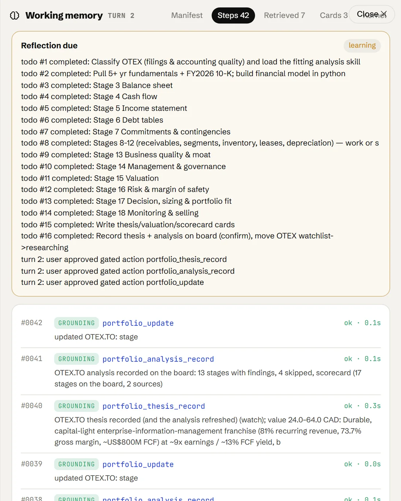
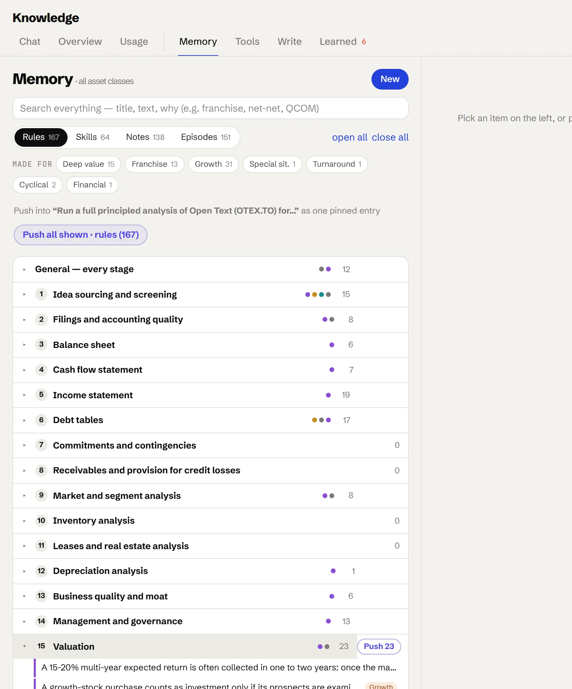
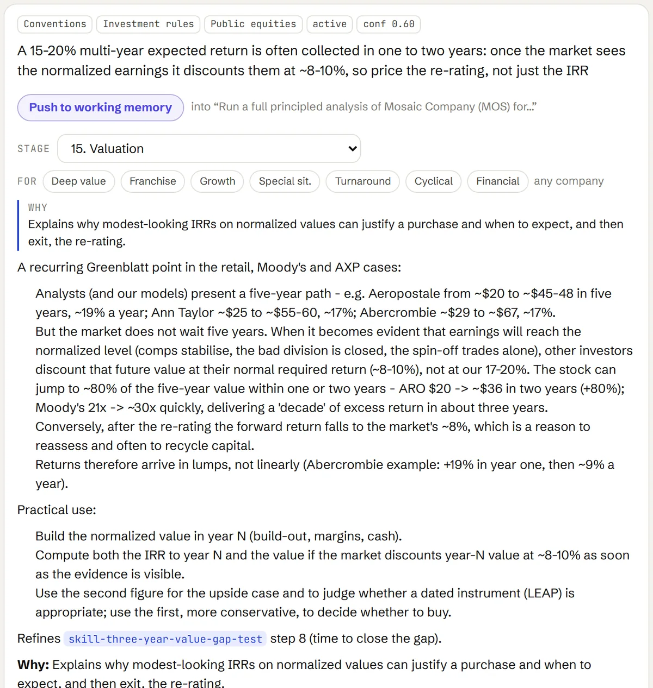

It remembers how your firm invests.
Working memory for the session, long-term memory for the firm, and a learning loop that never promotes a rule without your approval and its why.
It remembers how your firm invests.
Two kinds of memory. Working memory is the desk for one session. Long-term memory is the firm's: episodes of past decisions, standing rules, and skills. Retrieval into one and learning out of the other both happen while the agent works, and nothing becomes a rule without your approval.
The desk for one session.
Manifest, Steps, Retrieved, Cards and Kernel. The goal and plan, every tool call and Python cell with its output, the rules pushed in for the current stage, and the thesis, valuation and scorecard cards being written. It is the agent's working directory; everything it reasons from is in it. Here, the Open Text analysis, ending with the actions the analyst approved.

Skills and rules, each tagged to the stage where it applies.
Three kinds, as in the cognitive architecture the agent follows: episodes of decisions, corrections and approvals ; knowledge and rules, the firm's value and process rules and its notes on companies and frameworks; and skills, one written procedure each. Every item has a status (candidate, active, deprecated, superseded) and a why, and the library grows with every session. Below, examples by stage. Click a skill for what it does.
∗Every stage
1Idea sourcing and screening
2Filings and accounting quality
3Balance sheet
4Cash flow statement
5Income statement
6Debt tables
7Commitments and contingencies
8Receivables and provision for credit losses
9Market and segment analysis
10Inventory analysis
11Leases and real estate analysis
12Depreciation analysis
13Business quality and moat
14Management and governance
15Valuation
16Risk and margin of safety
17Decision, sizing and portfolio fit
18Monitoring and selling
1Idea sourcing and screening
6Debt tables
∗Every stage
1Idea sourcing and screening
2Filings and accounting quality
3Balance sheet
6Debt tables
9Market and segment analysis
15Valuation
16Risk and margin of safety
17Decision, sizing and portfolio fit
18Monitoring and selling
The same library, in the app.
The Memory tab lists rules, skills, notes and episodes, filtered by the playbook they were made for and grouped by stage. Open a stage to read its rules, or push them all into the current session as one pinned entry.

Nothing is promoted without a why.
What the agent proposes to remember lands in the Learned inbox. Episodes are recorded freely; knowledge becomes a candidate; rules and skills never change its behaviour until you write down why they matter and approve them. Every rule carries that why, a status and a confidence: a rule that is followed gains confidence, and one you override loses it and a replacement is proposed.
